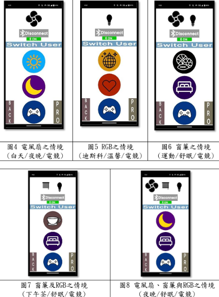

作品功用
使用者可依當前狀態決定所需家電，選擇並確認後將有三種預設情 境可一鍵控制(各種情境如下圖4~圖8)。倘若使用者對預設之情境不滿意， 可至pro介面進行自定義。使用者按下開關後，家電會開始運作，同時會 收到LineNotify通知。此外，此專題目前最多可供三位使用者做使用。

使用者可依當前狀態決定所需家電，選擇並確認後將有三種預設情 境可一鍵控制(各種情境如下圖4~圖8)。倘若使用者對預設之情境不滿意， 可至pro介面進行自定義。使用者按下開關後，家電會開始運作，同時會 收到LineNotify通知。此外，此專題目前最多可供三位使用者做使用。